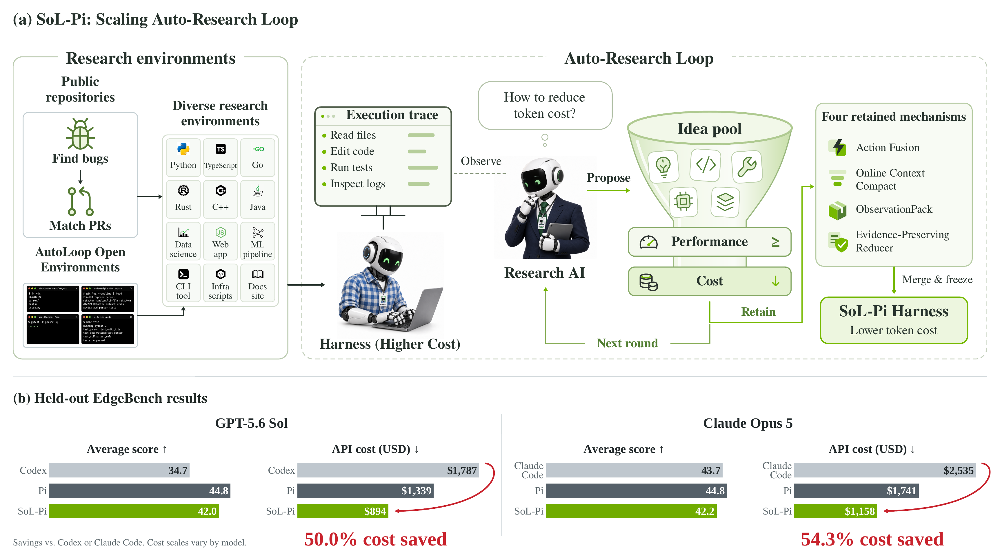

01研究背景与问题定义
长程编码代理的成本不只来自回答多写了几句。一次编辑后再等模型决定运行测试，会多一次来回；大日志即使只用一次，也会在后续请求里反复传输；上下文压缩太早会破坏缓存，太晚又持续携带冗余。局部减少文本并不保证整条任务更便宜，因为丢失证据可能引发重读、错误诊断和补救。
SoL-Pi 将 harness 的这些工作方式作为自动研究对象。研究代理读取执行轨迹、提出改动、在开发环境里验证能力与效率，再将四个保留机制整合为 Pi 扩展。它的主要创新是把有能力约束的系统机制发现规模化；最终的 token 节约是这一研究过程产出的工作点，不是全文唯一研究对象。
| 开销边界 | 需要保留什么 | 保留机制 |
|---|---|---|
| 编辑到执行之间 | 必须先看结果才能决定的动作仍分开。 | Action Fusion 合并可预先指定的后续命令。 |
| 计划与累计上下文之间 | 未来节省需覆盖缓存重写成本。 | Online Context Compact 用收益门槛触发。 |
| 大观察跨请求反复出现 | 精确原文能被重新取回。 | ObservationPack 归档、短期全量、后续句柄化。 |
| 主模型读取测试日志 | 错误证据、退出状态与原文一致。 | Evidence-Preserving Reducer 提取后确定性核验。 |
这些机制作用点不同、还可能相互影响，所以论文把整体集成也纳入研究和评估。不能仅以某个模块的局部省 token 比例推断最终系统净收益。
02方法与技术路线
方法包含两层：外层自动研究产生并筛选机制，内层冻结后的四个机制改变代理运行。最终评估结果不回流到开放机制搜索，51 个公开 EdgeBench 任务又分为单向接受与最终迁移子集。
模型计划与文件操作
Action Fusion：能预先确定的 edit + follow-up command 合成一次工具请求。
构建 / 测试日志
Reducer 保存原文 → 小模型提取 receipt → 程序核对来源、退出码和精确引用；失败回原文。
其他大工具结果
ObservationPack >10 KiB 归档；前两次请求全量，第三次起改句柄与摘要，支持按页原文召回。
自动研究：搜索的是可复用干预，不是逐题答案
外层从上下文、进度、工具、委派、提示策略等不同方向提出机制假设，并在仓库型与可执行验证型环境中反复实现、试验、审查。候选要超出单个有利案例，并通过能力约束；独立机制保留后还需要集成，解决相互作用。
论文在 EdgeBench 公开 51 题中用 11 题作冻结候选的单向接受，余 40 题用于最终泛化。这里“留出”并不表示所有 51 题都从未参与任何接受决策；应区分开发搜索、接受和最终迁移三层。自动研究的成本也不属于最终每任务执行账单。
Action Fusion 与缓存感知压缩：先判断能否减少一次工作
Fusion 给写文件等变更工具增加可选后续命令，将变更和已可决定的测试一同执行，一次观察返回两者结果。如果下一步依赖检查变更输出，就不能预先融合。它省的是中间模型往返，而不是把有依赖的动作随意并发。
压缩在计划子步完成时估计剩余请求：参考已完成子步的请求数与未完成步骤，并用当前窗口增长限制外推。只有预期输入节约覆盖缓存重写开销才触发，后续还考虑未收回的重写成本并提高裕量；近窗口上限则是另一触发条件。门槛估算没有独立定价摘要调用，属于后续解释成本效果时的边界。
ObservationPack：让旧观察可寻址，而非彻底删掉
超过 10 KiB 的工具结果先原样归档，并在接下来两次提供商请求中保留全量，给即时推理读取机会。第三次起替换为稳定句柄、原大小和完整首尾行摘录；需要时可以取回精确页面。小结果不处理。
两次全量和后续按需召回区分了“现在有用”与“以后可能需要”。它依赖主模型能识别何时该重读；如果关键证据位于中段而模型没有召回，大幅减小输入也可能牺牲成功率。这是可恢复信息路径，不是已经保证语义无损。
Reducer：低成本提取不获得诊断权
指定构建和测试命令产生至少 4 KiB 日志时，先存精确原文，小模型提出紧凑凭据。确定性核验检查模式、源哈希、退出状态、原文精确引句和长度；不通过、疑似凭据或没有缩减时回退原日志。文件读取和搜索结果跳过此模块。
Reducer 先于 ObservationPack，后者识别已验证凭据并跳过，避免二次摘要破坏核验结果。小模型只负责挑证据，主代理仍负责解释错误和选择动作；程序能检查引用确实存在，却不能保证被选片段覆盖所有诊断所需信息。
论文原始结构图 · 点击对照

03实验设计与结果分析
节约成本的完整栈是否完全保住得分
EdgeBench 51 个公开任务，GPT-5.6 Sol；token traffic 为记录到的输入、缓存读写和输出总流量，不是纯输出量；美元为论文固定日期价格。
| 配置 | 总流量 B | API 成本 $ | 平均分 |
|---|---|---|---|
| Pi | 2.1538 | 1,339 | 44.833 |
| SoL-Pi Efficiency，四机制完整栈 | 1.0990 | 894 | 42.003 |
| SoL-Pi Performance，单机制 ObservationPack | 2.0224 | 1,271 | 47.208 |
完整栈流量降低 49.0%、账单降低 33.2%，同时得分保留约 93.7%，因此它是性能—成本折中，不能说完全等性能免费加速。Performance 点则提高得分且小幅省钱，但它是按后端另选的单机制工作点，不代表完整栈同时拥有两种收益。
转到未重新搜索的 Opus 5，完整栈流量下降 44.7%、成本下降 33.5%、得分保留 94.3%。这支持跨后端可迁移的初步证据，但相同的轻微性能损失也继续存在。
机制证据应与系统工作点一起解读
四个模块分别改变请求数、缓存重写、旧输出重复传输和委派阅读，所以 token traffic 下降与货币成本下降不成比例是合理现象；缓存读写价格与辅助模型费用会改变账单。论文还在终端、形式化数学和代理协作等设置检验，提供用途广度，不能替代每个机制条件触发时的可靠性分析。
最重要的未统一账本是搜索与部署：大规模自动研究为冻结机制支付的总开发成本，和一次部署执行节省并非同一口径。是否值得，要看复用任务量以及性能损失容忍度，而不能只看一次执行的节约比例。
04贡献、局限与综合评价
核心贡献：系统优化必须保住证据路径和退回路径
SoL-Pi 展示了 harness 自动研究如何产出有清晰作用点的可复用机制。较耐久的思想是：合并动作先判断依赖，压缩先算缓存账，卸载观察保留寻址，委派阅读保留可核验原文。它们把能力约束具体放到了执行边界，而不是最后用一个总分补救任意删减。
可恢复与可核验都弱于语义充分
句柄能取回原文，但前提是模型意识到需要；精确引用能证明句子存在，却不能证明遗漏的内容不影响诊断。完整栈有约 6% 相对得分损失，可能正来自这些信息选择边界，也可能是任务随机差异或多个机制交互。现有汇总不单独识别原因。
更有区分力的评估应固定任务和随机性，在失败轨迹中逐一恢复原始观察、禁用摘要或延迟句柄化，测量哪种恢复能救回答案。若恢复中段信息有效，瓶颈是召回触发；若单机制都成功而组合失败，重点应转向模块交互。
综合判断，论文支持自动研究能够发现跨设置有用的效率机制，并给出真实价格口径下的收益；它不支持无损压缩或无限自改进。最值得学习的是把优化假设变成有依赖判断、核验、回退和留出测试的系统变更。